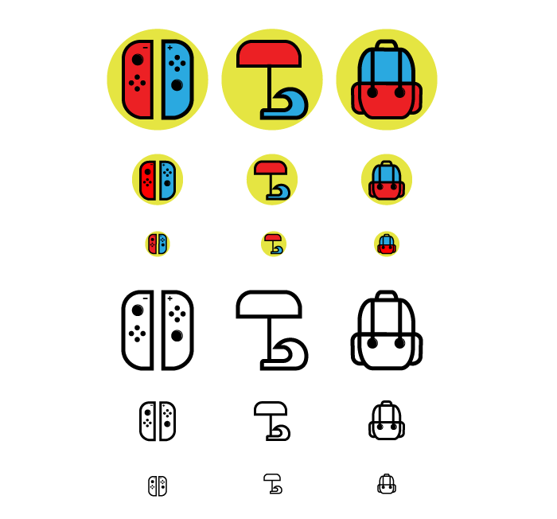
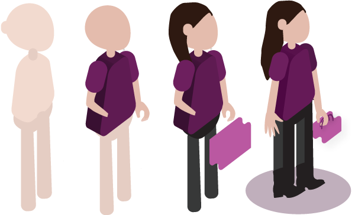
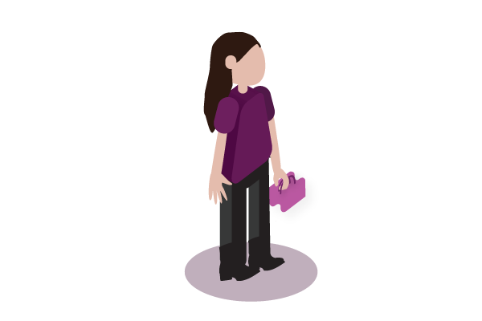

October 2, 2019
Project 3: Icons

My icons are a Nintendo Switch, a Beach with a wave, and a Backpack. All these icons represents a part of me. The Nintendo Switch represents the gaming side of me. The Beach with the wave represnts my love for summer. The backpack shows my love for traveling. The icons look like they belong together because I kept the same color scheme and stroke size, while keeping similar shape within the icons.
August 21, 2019
Project 2: My Avatar Process

First, I started with a basic shape of a human. For instance, I used the ellipse tool to shape the head, ears and neck. However, I rounded the corners for the ears and the neck. For the top part of the body I started out with a rectangle. I rounded the corners of the rectangle and I extruded and beveled the shape in order to add some depth to it. For the legs I kept it simple and used the pen tool to draw them. I added a rounded recatngle shape to potray hips. Moving onto the second image, I changed the skin tone, added shoulders by using the ellipse tool, and used the pen tool to draw out the arms. By the third image, I drew out the hair usig the pen tool, darkened my pants, and drew a purse. By the last image it all comes together. I improved my hair by increasing its legnth so that it wouls show how my hair falls. I used the pen tool to create my shoes, and made sure my avatar was holding onto the bag.
August 21, 2019
Project 1: My Avatar

I wanted my avatar to best potray me. I made sure to add colors that I like such as purple and light pink. I made my hair long and added a purse to represent my fashion sense. Since this was an isometric design, I used tools such as extrude and bevel to set the edges for my Avatar.